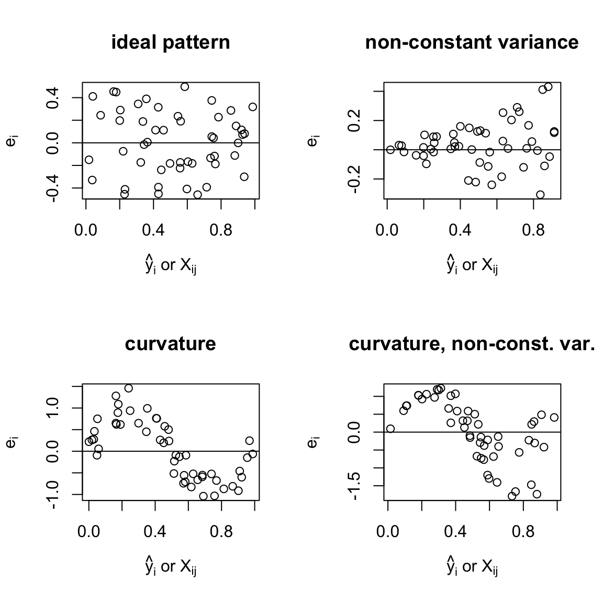
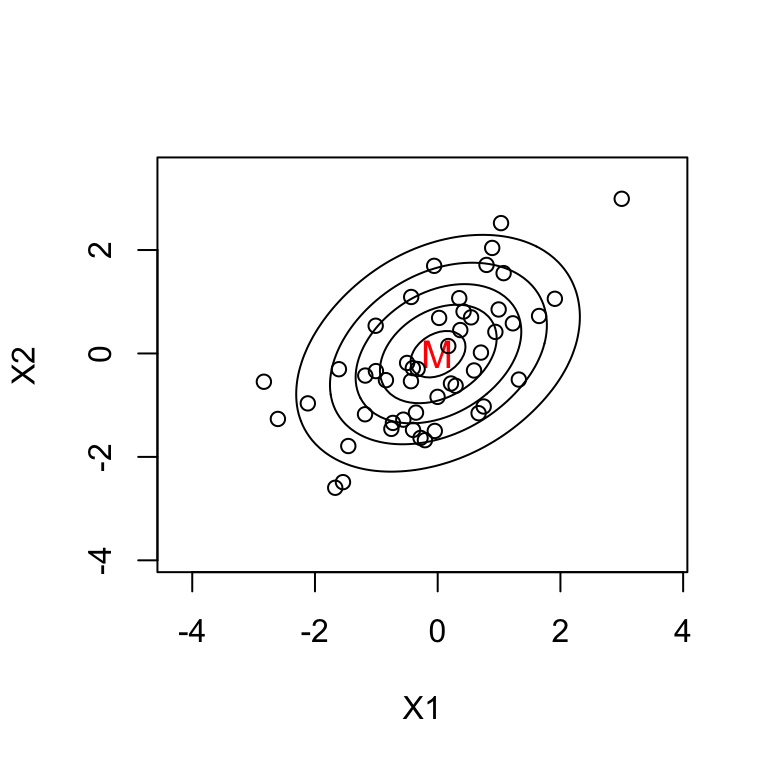
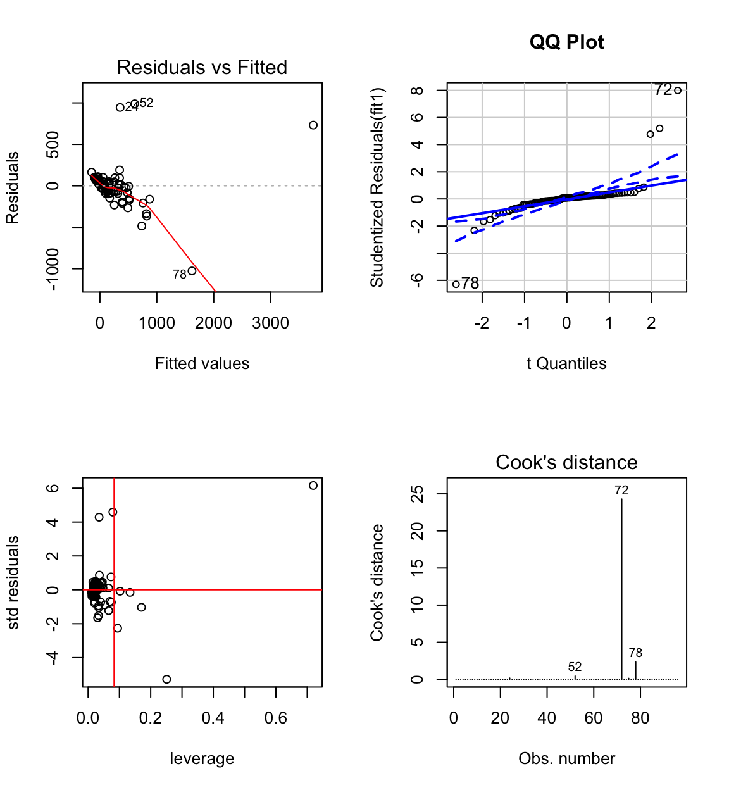
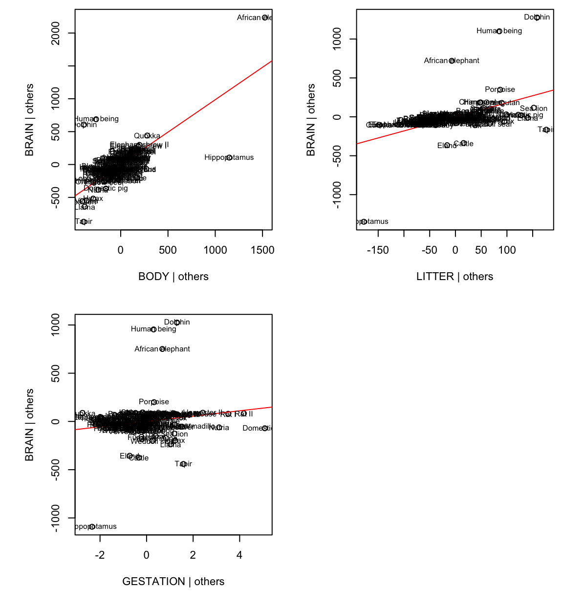
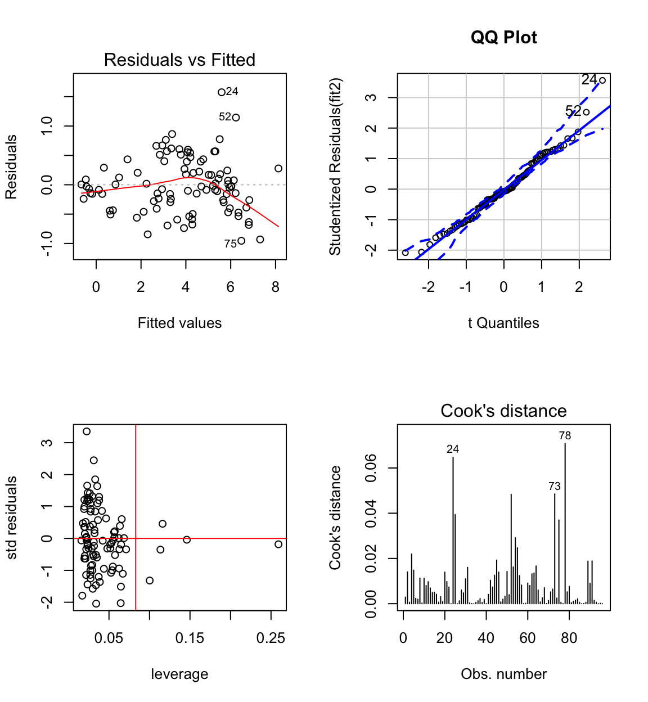
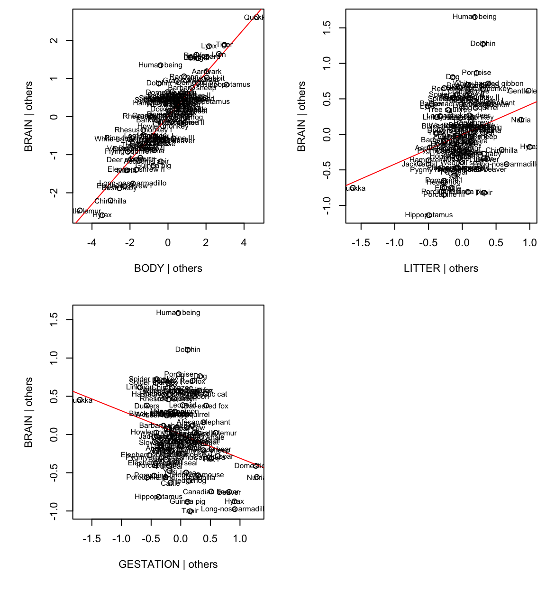
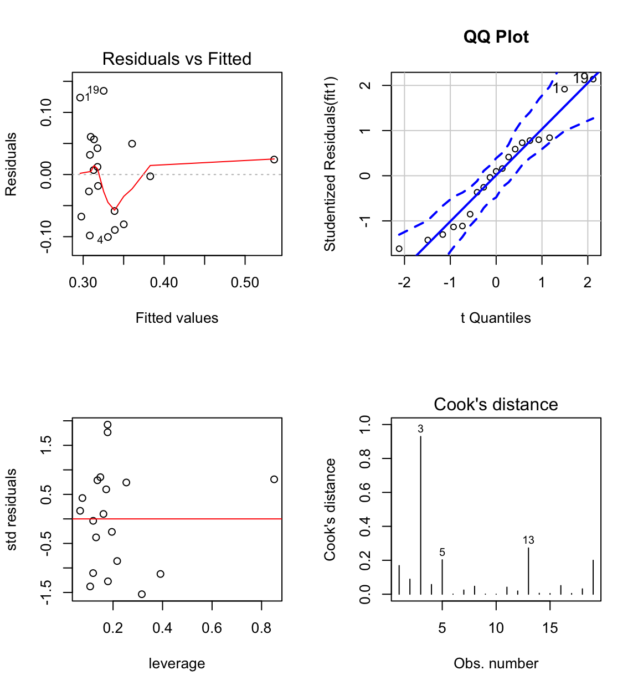
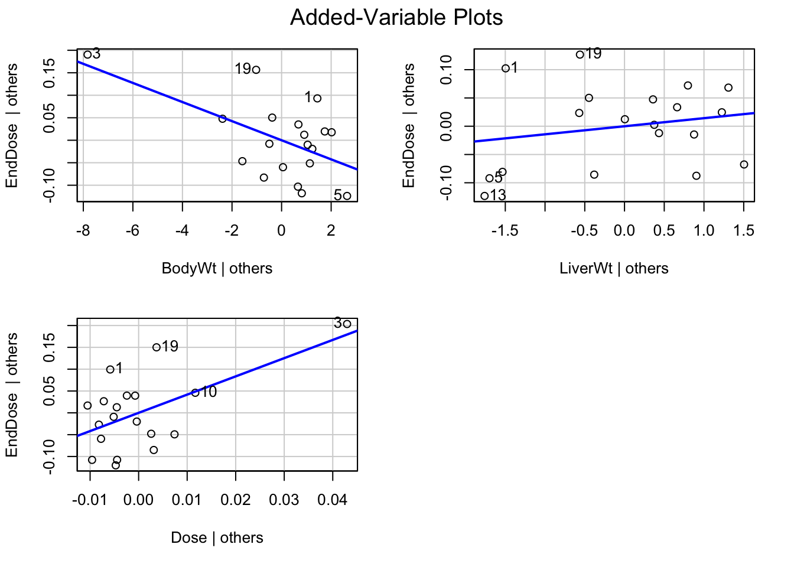
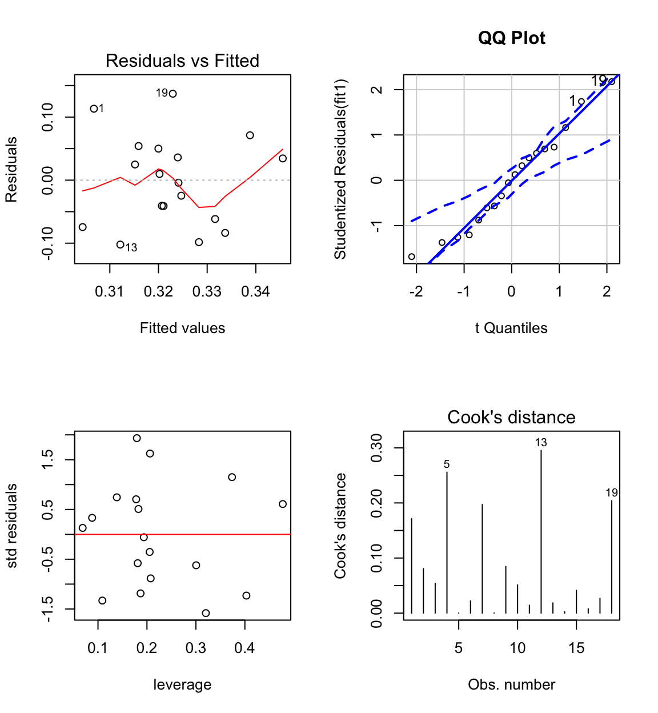

6 Diagnostic methods (in more details)
6.1 Model assumptions
The assumptions can be stated in terms of the error vector:
- \(\mathbb{E}(\boldsymbol{\epsilon}) = \mathbf{0}\)
- \(\mbox{Var}(\boldsymbol{\epsilon}) = \sigma^2\mathbf{I}_n\)
- \(\boldsymbol{\epsilon} \sim N(\mathbf{0}, \sigma^2\mathbf{I}_n)\)
Since we do not observe \(\boldsymbol{\epsilon}\) we cannot check assumptions directly. Instead we observe residuals \(\mathbf{e}\).
6.2 Residuals
Residuals are the key to assessing model problems.
\[\mathbf{e} = \mathbf{Y} - \mathbf{\hat{Y}} = \mathbf{Y} - \mathbf{H}\mathbf{Y} = (\mathbf{I} - \mathbf{H})\mathbf{Y} \]
How do \(\boldsymbol{\epsilon}\) and \(\mathbf{e}\) differ?
If the model is correct,
\(\mathbb{E}(\mathbf{e}) = \mathbb{E}(\mathbf{Y}) - \mathbb{E}(\mathbf{\hat{Y}})= \mathbf{0}\) (the same)
\(\mbox{Var}(\mathbf{e}) = (\mathbf{I} - \mathbf{H})\sigma^2\) (different).
Like errors, residuals have mean 0, but Var(\(e_i) = (1-h_{ii})\sigma^2\) so their variance is not quite constant (variance is smaller for \(h_{ii}\) close to 1).
Note: this results shows that the residuals may have different variances even when \(y_i\)s have the same variance (\(\sigma^2\)) because the precision of the fitted values depends on the pattern of \(X_i\)s.
Cov(\(e_i, e_j) = -h_{ii}\sigma^2\), for \(i \neq j\). So the residuals are correlated, but in practice this correlation is generally not important or visible in residual plots.
We plot:
- \(e_i\) vs \(\hat{y}_i\) (residual vs fit),
- \(e_i\) vs \(X_{ij}\) (residual vs predictor \(j\)).
The SLR conclusions are clear cut. In multiple regression deviations from the ideal pattern indicate model problems but precise diagnosis is more difficult.

Figures above:
- ideal pattern: random scatter of points around 0 line
- non-constant variance, variability of residuals is changing
curvature suggests that: \(\mathbb{E}(e_i) \neq 0\), thus, \(\mathbb{E}(\epsilon_i)\neq 0\)
curvature and non-constant variance
6.3 Leverage values
\[\begin{align*} \mathbf{\hat{Y}} & = \mathbf{H}\mathbf{Y}\\ \mathbf{H} & = \mathbf{X}(\mathbf{X}^T\mathbf{X})^{-1}\mathbf{X}^T\\ h_{ii} & = \mathbf{X}_i^T(\mathbf{X}^T\mathbf{X})^{-1}\mathbf{X}_i\\ \end{align*}\]\(h_{ii}\) is known as the leverage of case \(i\).
where \(\mathbf{X}_i\) is row \(i\) of \(\mathbf{X}\) matrix in a column vector.
In SLR,
\[\begin{align*} h_{ii} & = \frac{1}{n} + \frac{(x_i - \bar{x})^2}{S_{xx}}. \end{align*}\]A similar formula can be derived for multiple regression:
\[h_{ii} = \frac{1}{n} + (\mathbf{X}_i^* -\mathbf{M})(\mathbf{\tilde{X}}^T\mathbf{\tilde{X}})^{-1}(\mathbf{X}_i^* - \mathbf{M}),\]
where
\(\mathbf{X}_i^*\) is row \(i\) of \(\mathbf{X}\) matrix without the column of \(\mathbf{1}\)s.
i.e.
\(\mathbf{X}_i =\begin{bmatrix} 1 & \mathbf{X}_i^* \end{bmatrix}\)
\(\mathbf{M}\) is the mean vector
\[\mathbf{M} =\begin{bmatrix} \bar{X}_{.1}\\ \vdots \\ \bar{X}_{.k} \end{bmatrix}\]
\(\tilde{\mathbf{X}}\) is the matrix of centered \(x\) - data values, i.e.
\[\tilde{\mathbf{X}} =\begin{bmatrix} (X_{11} - \bar{X}_{.1}) & \dots & (X_{1k} - \bar{X}_{.k}) \\ (X_{21} - \bar{X}_{.1}) & \dots & (X_{2k} - \bar{X}_{.k}) \\ \vdots & \vdots &\vdots \\ (X_{n1} - \bar{X}_{.1}) & \dots & (X_{nk} - \bar{X}_{.k}) \end{bmatrix} \]
\(\bar{X}_{.1}, \dots, \bar{X}_{.k}\) are the means of the \(k\) predictors.
Therefore \(h_{ii}\) measures the `distance’ of case \(i\) from the average case \(\mathbf{M}\).
Example \(k=2\): contours of constant \(h_{ii}\)
All points on an ellipse have the same \(h_{ii}\) value.

6.3.1 Properties of \(h_{ii}\):
\(0 \leq h_{ii} \leq 1\) or if the model has an intercept \(\frac{1}{n} \leq h_{ii} \leq 1\)
\(\sum_{i=1}^n h_{ii} =p\) where \(p\) is the number of parameters
\(\sum_{i=1}^n h_{ij} =\sum_{j=1}^n h_{ij} = 1\), i.e. row sum = col sum = 1.
If \(h_{ii}\) is large (rule of thumb: large if \(\geq 2 \times \mbox{average } h_{ii} = 2p/n\)), then the case may be:
- a mistake
- a high influence case (i.e. has a big impact on results).
If \(h_{ii}\) is extremely large (i.e. close to 1):
- \(\hat{y}_i \approx y_i\) so \(e_i \approx 0\) and
- Var(\(\hat{y}_i)= h_{ii}\sigma^2 \approx \sigma^2 \approx\) Var(\(y_i\)).
In this case \(\mathbb{E}(y_i)\) is imprecisely estimated. In practice, this rarely happens.
6.4 Standardised residuals
When we compare residuals (\(e_i\)) for different observations we should take into account that their variances may differ:
\[\mbox{Var}(e_i) = (1-h_{ii})\sigma^2.\]
We can standardise them by dividing by \(\sqrt{(1-h_{ii})}\hat{\sigma}\), where \(\hat{\sigma}\) is the estimate based on the SSE. We get standardised residuals:
\[r_i=\frac{e_i}{\sqrt{(1-h_{ii})}\hat{\sigma}}.\]
Then we have: \(\mathbb{E}(r_i) = 0\) and \(\mbox{Var}(r_i)\approx 1\) (constant).
Since \(r_i\), unlike \(e_i\), are on a common scale it is easier/fairer to compare them.
Standardised residuals are useful in detecting anomalous observations or outliers.
Note:
- Cases with \(|r_i| \geq 2\) are not well fit.
- \(r_i\) are often used in place of \(e_i\) in residual plots and normal probability plots.
- \(r_i\) (and \(e_i\)) are not independent.
6.5 Leave-one-out methods
Remember that as \(h_{ii}\) approaches 1, the variance of the residual approaches 0, indicating that the fitted value \(\hat{y}_i\) is pulled close to the observed value \(y_i\).
So leverage \(h_{ii}\) is the potential influence of the \(i^{th}\) observation.
Observations with high leverage need to be inspected carefully as they might have a large influence on the fit.
Note that potential influence is not necessarily the same thing as actual influence, since it is might be the case that the observation is in line with rest of the data, and fitting the model without this observation would give a prediction close to the observed \(y_i\) anyhow.
One way to examine actual influence of case \(i\) is to compare the regression results with case \(i\) to those without case \(i\).
Denote the fitted values with all cases included as \(\hat{y}_1, \hat{y}_2, ..., \hat{y}_n\) as usual.
Denote the fitted values with case \(i\) removed as \(\hat{y}_{1(i)}, \hat{y}_{2(i)}, ..., \hat{y}_{n(i)}\), \(i = 1,...,n\).
Cook’s distance measures the influence of the \(i^{th}\) case by:
\[D_i = \sum_{j=1}^n \frac{(\hat{y}_{j}-\hat{y}_{j(i)})^2}{p \hat{\sigma}^2}.\]
Note this is the Euclidean distance (SS) between fitted values obtained by omitting the \(i^{th}\) observation \(\hat{y}_{j(i)}\) and fitted values based on all the data \(\hat{y}_{j}\).
Typically we examine the case with the largest \(D_i\) further or, in the case of large datasets, the few cases with the largest \(D_i\) values, as these have the largest influence.
So does the computation of Cook’s distance \(D_i\) for all observations require refitting the model \(n\) times? This would be computationally expensive!
It turns out that we can rewrite the above formula for \(D_i\) as a function of the standardised residual \(r_i\) and the leverage \(h_{ii}\). So in the end we only need tro fit the mopdel once and then we can compute \(D_i\) from the complete data regression results.
Shortcut formula:
\[\hat{y}_{j(i)}=\hat{y}_{j}- \frac{h_{ij}}{1-h_{ii}}e_i.\]
Thus:
\[\hat{y}_{j}-\hat{y}_{j(i)}= \frac{h_{ij}}{1-h_{ii}}e_i\]
and
\[\begin{align*} \sum_j(\hat{y}_{j}-\hat{y}_{j(i)})^2 & = \frac{e_i^2}{(1-h_{ii})^2}\sum_j h_{ij}^2\\ & = \frac{e_i^2 h_{ii}}{(1-h_{ii})^2},\\ \end{align*}\]from the properties of the H matrix (symmetric and idempotent).
Hence:
\[\begin{align*} D_i& = \frac{e_i^2 h_{ii}}{p \hat{\sigma}^2(1-h_{ii})^2}\\ & = \frac{r_i^2h_{ii}}{p(1-h_{ii})}.\\ \end{align*}\]In general, high influence or outlier cases have either:
- Big \(|r_i|\) and big \(h_{ii}\). (RX)
- Big \(|r_i|\) and moderate \(h_{ii}\). (R)
- Moderate \(|r_i|\) and big \(h_{ii}\). (X)
6.6 Other influence measures
- \(\hat{\beta_j}-\hat{\beta}_{j(i)}\) (the effect of leaving case \(i\) out)
- \(\hat{\sigma}_{(i)}\) (estimate of \(\sigma\) with case \(i\) omitted). Used in: “studentised residual” = \(\frac{\hat{\epsilon_i}}{\sqrt{1-h_{ii}}\hat{\sigma}_{(i)}}\)
6.7 Testing outliers
If an individual case is suspected of being an outlier a formal hypothesis test can be performed to verify. Details of the test are in Chapter 9 of Weisberg (2005).
For more on leverages and influence see Chapter 2 of Rodríguez (2007). For a very detailed exposition on linear model diagnostics see Chapter 11 and 12 of Fox (2016).
6.8 Diagnostics examples (two case studies)
6.8.1 Example 1: Brain size versus body gestation period and litter
Example from Ramsey and Schafer (2002) (case0902 in library(Sleuth3)).
It is known that body size of mammals is a good predictor of brain size but it was of interest to know if gestation period and litter size were also good predictors. This data contains average values of brain weight, body weight, gestation length and litter size in 96 species of mammals.

Does the model fit well? Outliers, nonlinearity? NOTE: in MTB you can use brushing (set species as ID variables) and link the graphs to explore the data.
#library(car)
#library(MASS)
fit1 <- lm(BRAIN ~ BODY + GESTATION + LITTER)
summary(fit1)##
## Call:
## lm(formula = BRAIN ~ BODY + GESTATION + LITTER)
##
## Residuals:
## Min 1Q Median 3Q Max
## -1026.68 -62.08 17.29 51.73 988.76
##
## Coefficients:
## Estimate Std. Error t value Pr(>|t|)
## (Intercept) -225.29213 83.05875 -2.712 0.00797 **
## BODY 0.98588 0.09428 10.457 < 2e-16 ***
## GESTATION 1.80874 0.35445 5.103 1.79e-06 ***
## LITTER 27.64864 17.41429 1.588 0.11579
## ---
## Signif. codes: 0 '***' 0.001 '**' 0.01 '*' 0.05 '.' 0.1 ' ' 1
##
## Residual standard error: 224.6 on 92 degrees of freedom
## Multiple R-squared: 0.81, Adjusted R-squared: 0.8038
## F-statistic: 130.7 on 3 and 92 DF, p-value: < 2.2e-16# anova(fit1)Clearly the model is defective.
The normal probability plot shows that the residuals come from a heavy tailed distribution.
The residual vs fit plot shows a linear pattern for the majority of data and a few outliers. Most of the pattern is hidden because the data is clumped together. We also observe unequal variance.

African elephant, Hippopotamus, Dolphin, Human have large standardised residuals.
African elephant, Hippopotamus and Dolphin, have large influence.
####################
# influence measures
####################
inflm.SR <- influence.measures(fit1)
int <- which(apply(inflm.SR$is.inf, 1, any))
cbind(brain.data[int ,],
influence(fit1)$hat[int],# large leverage
stdres(fit1)[int],# large std residual
abs(D)[int]) # large Cook's D## SPECIES BRAIN BODY GESTATION LITTER
## 24 Human being 1300.00 65.00 270 1.0
## 39 Rat I 0.72 0.05 23 7.3
## 40 Rat II 2.38 0.34 21 8.0
## 52 Dolphin 1600.00 160.00 360 1.0
## 72 African elephant 4480.00 2800.00 655 1.0
## 75 Tapir 250.00 230.00 390 1.0
## 77 Domestic pig 180.00 190.00 115 8.0
## 78 Hippopotamus 590.00 1400.00 240 1.0
## influence(fit1)$hat[int] stdres(fit1)[int] abs(D)[int]
## 24 0.03522907 4.28526198 1.676377e-01
## 39 0.10218313 -0.08211966 1.918783e-04
## 40 0.13397456 -0.15234064 8.975596e-04
## 52 0.07906017 4.58816129 4.517975e-01
## 72 0.71937767 6.15725313 2.429678e+01
## 75 0.09448789 -2.26740230 1.341155e-01
## 77 0.17045813 -1.03271364 5.478722e-02
## 78 0.25103327 -5.28288412 2.338573e+00

Added-variable plots can be used for detecting influential data.
For example, AVP for body:
Hippo and African elephant have a large body given the other variables (litter and gestation).
Humans, dolphins and African elephant have a large brain for their litter and gestation.
Together Humans, dolphins and hippos reduce the body slope, African elephant, while a high-leverage point, is more in line with the rest of the data.
The raw data have a lot of skeweness. This naturally generates a lot of outliers and obscures patterns in the data.
Transform the data by taking the logs to improve the model and fit.

The skeweness is gone. The plot of log(brain) vs log(body) shows a strong linear pattern - not apparent with the untransformed variables. Therefore the log transformation of these two variables seems appropriate. The other variables are also less skewed than before.
fit2 <- lm(log(BRAIN) ~ log(BODY) + log(GESTATION) + log(LITTER))
summary(fit2)##
## Call:
## lm(formula = log(BRAIN) ~ log(BODY) + log(GESTATION) + log(LITTER))
##
## Residuals:
## Min 1Q Median 3Q Max
## -0.95415 -0.29639 -0.03105 0.28111 1.57491
##
## Coefficients:
## Estimate Std. Error t value Pr(>|t|)
## (Intercept) 0.85482 0.66167 1.292 0.19962
## log(BODY) 0.57507 0.03259 17.647 < 2e-16 ***
## log(GESTATION) 0.41794 0.14078 2.969 0.00381 **
## log(LITTER) -0.31007 0.11593 -2.675 0.00885 **
## ---
## Signif. codes: 0 '***' 0.001 '**' 0.01 '*' 0.05 '.' 0.1 ' ' 1
##
## Residual standard error: 0.4748 on 92 degrees of freedom
## Multiple R-squared: 0.9537, Adjusted R-squared: 0.9522
## F-statistic: 631.6 on 3 and 92 DF, p-value: < 2.2e-16#anova(fit2)
The biggest standardised residual is now case 24 (Human) who have a larger brain than predicted by the model.
Highest leverage is case 1 (quokka), but it doesn’t have high influence (this also goes for all cases with \(h_{ii} > 0.083 = 2p/n\), where average \(h_{ii} = p/n\), except for case 73 which has longer gestation).
The residual distribution shows some skeweness, but is closer to normal than before.
The residual vs fit plot shows some evidence of non-constant variance. Perhaps some other transformation would be better?

To make these plots in minitab use the storage option for standardised residuals, Cook’s dist and leverages.
To answer the original question, clearly gestation time and litter size are important predictors of brain size in the presence of body size.
6.8.2 Example 2: Rat data
Example from Weisberg (2005).
Experiment to investigate amount of drug present in liver of rat.
BodyWt = body weight of the rat
LiverWt = measured after sacrifice
Dose = dose given, proportional to body weight
EndDose = dose of drug recovered after sacrifice of the animal
Experimantal hypothesis: no relationship between EndDose and 3 predictors.

#library(car)
#library(MASS)
fit1 <- lm(EndDose ~ BodyWt + LiverWt + Dose, data = rats.data)
summary(fit1)##
## Call:
## lm(formula = EndDose ~ BodyWt + LiverWt + Dose, data = rats.data)
##
## Residuals:
## Min 1Q Median 3Q Max
## -0.100557 -0.063233 0.007131 0.045971 0.134691
##
## Coefficients:
## Estimate Std. Error t value Pr(>|t|)
## (Intercept) 0.265922 0.194585 1.367 0.1919
## BodyWt -0.021246 0.007974 -2.664 0.0177 *
## LiverWt 0.014298 0.017217 0.830 0.4193
## Dose 4.178111 1.522625 2.744 0.0151 *
## ---
## Signif. codes: 0 '***' 0.001 '**' 0.01 '*' 0.05 '.' 0.1 ' ' 1
##
## Residual standard error: 0.07729 on 15 degrees of freedom
## Multiple R-squared: 0.3639, Adjusted R-squared: 0.2367
## F-statistic: 2.86 on 3 and 15 DF, p-value: 0.07197#anova(fit1)It appears as if a combination of bodyweight and dose are relevant to EndDose. However, they are not individually related to EndDose even though \(X_1 \propto X_3\)

Case 3 has large influence (see Cook’s distance plot).
Case 3 is an unusual combination of dose and bodyweight.
head(rats.data[sort(influence(fit1)$hat,
decreasing = TRUE, index.return = TRUE)$ix,])## BodyWt LiverWt Dose EndDose
## 3 190 9.0 1.00 0.56
## 5 200 7.2 1.00 0.23
## 13 149 5.2 0.75 0.21
## 8 195 10.0 0.98 0.41
## 16 186 6.8 0.94 0.28
## 17 146 7.3 0.73 0.30A rat was given a dose that was too high for his bodyweight.
avPlots(fit1)
Redo the analysis with case 3 removed:

fit1 <- lm(EndDose ~ BodyWt + LiverWt + Dose, data = rats.data[-3,])
summary(fit1)##
## Call:
## lm(formula = EndDose ~ BodyWt + LiverWt + Dose, data = rats.data[-3,
## ])
##
## Residuals:
## Min 1Q Median 3Q Max
## -0.102154 -0.056486 0.002838 0.046519 0.137059
##
## Coefficients:
## Estimate Std. Error t value Pr(>|t|)
## (Intercept) 0.311427 0.205094 1.518 0.151
## BodyWt -0.007783 0.018717 -0.416 0.684
## LiverWt 0.008989 0.018659 0.482 0.637
## Dose 1.484877 3.713064 0.400 0.695
##
## Residual standard error: 0.07825 on 14 degrees of freedom
## Multiple R-squared: 0.02106, Adjusted R-squared: -0.1887
## F-statistic: 0.1004 on 3 and 14 DF, p-value: 0.9585#anova(fit1)Experimental hypothesis is validated as all coefficients have large P-values.

6.8.2.1 Should Unusual Data Be Discarded?
Although problematic data should not be ignored, they also should not be deleted automatically. It is important to investigate why an observation is unusual.
Truly bad data (e.g.rats) can be corrected or thrown away. When a discrepant data-point is correct, we may be able to understand why the observation is unusual.
For Species Brain data, it makes sense that humans enjoy brain size not accounted for by the other variables. In a case like this, we may choose to deal separately with an outlying observation.
Outliers or influential data may motivate model respecification e.g. the introduction of additional explanatory variables.
However, we must be careful to avoid overfitting the data i.e. permitting a small portion of the data to determine the form of the model.
A more extensive discussion can be found in Fox (2016) Chapter 11.7, pg 288-289.
6.8.2.2 Demonstrate effect of omiting cases on regression line
Cigarette data from 3.7.4. Select a point to remove and refit the model.
References
Weisberg, Sanford. 2005. Applied linear regression. Wiley-Blackwell.
Rodríguez, G. 2007. “Lecture Notes on Generalized Linear Models.” http://data.princeton.edu/wws509/notes/.
Fox, John. 2016. Applied Regression Analysis and Generalized Linear Models. 3rd ed. SAGE Publications.
Ramsey, Fred, and Daniel Schafer. 2002. The Statistical Sleuth: A Course in Methods of Data Analysis. 2nd ed. Duxbury Press.